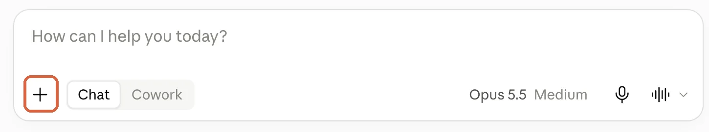
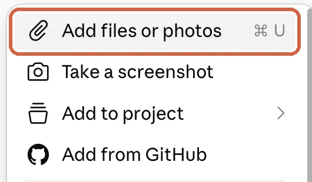
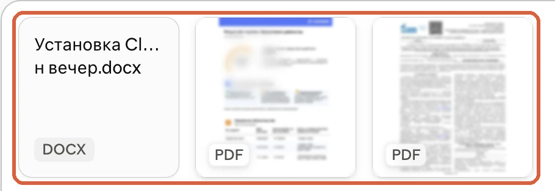
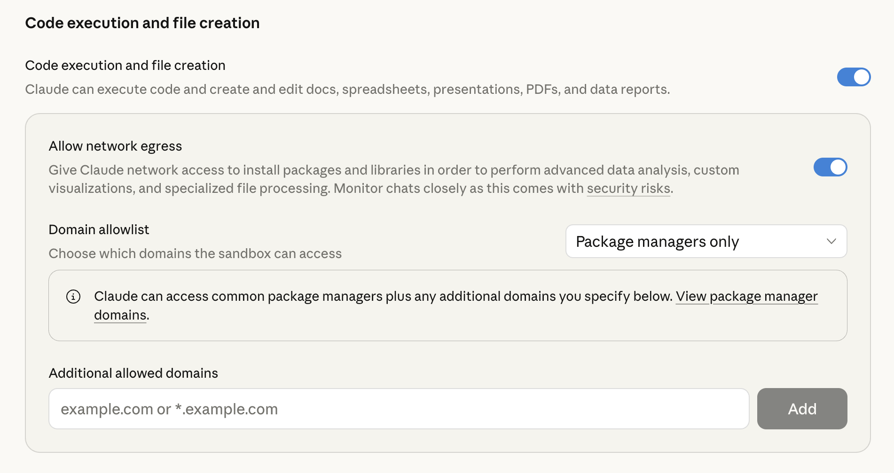

Claude.ai · выпуск 18
Загрузка файлов в Claude: один документ и пачка файлов
Копируешь договор в чат по абзацу: пункт сюда, таблицу туда, а потом ещё объясняешь Claude, как куски связаны. Claude отвечает по твоему пересказу, и важное различие между версиями легко теряется. Кажется, достаточно приложить оригиналы - но даже три видимых вложения могут привести к неверному сравнению. За две минуты пройдёшь путь от одного файла до пачки, узнаешь, что Claude действительно читает, и получишь фразу для проверки перед анализом
Первый файл
Прикрепи один документ
Открой claude.ai и начни с договора, который сейчас приходится переносить в чат вручную
1. Найди плюс у поля ввода
Кнопка + находится слева внизу поля сообщения. Нажми её, чтобы открыть меню вложений

Результат: открыто меню действий у поля ввода
2. Выбери файл
Нажми Add files or photos, найди договор в системном окне и нажми Открыть (Open). Другой способ - перетащи файл мышкой прямо в окно чата

Результат: имя договора появилось как вложение рядом с сообщением. Название файла, просто напечатанное в чате, вложением не считается
Три версии разом
Добавь пачку файлов
Если сравниваешь несколько версий, приложи оригиналы в один чат, чтобы Claude мог сопоставить их между собой
3. Выдели нужные документы
Снова нажми + → Add files or photos. Открой папку на компьютере, выдели нужные файлы и нажми Открыть (Open). Несколько выделенных файлов можно также перетащить в чат вместе
Результат: у сообщения видны отдельные вложения для каждой версии. Выбор файлов в папке не открывает Claude всю папку

В обычном чате Anthropic указывает предел до 20 файлов и до 500 МБ на файл. Если материалов больше, раздели анализ на части. Для постоянной справки есть Projects в Claude: туда добавляют файлы, доступные в новых чатах этого проекта
До анализа
Проверь, что Claude получил
Вложения появились у сообщения. Теперь отправь короткую проверку, прежде чем просить вывод по договору
4. Сверь список файлов
Скопируй фразу ниже и отправь в том же чате. Сверь ответ Claude с именами файлов на компьютере
Перечисли названия всех файлов, которые ты получил в этом чате. Если какой-то файл не открывается или его содержимое недоступно, скажи об этом до анализа
Результат: виден список доступных Claude файлов. Если версия отсутствует, прикрепи её отдельно и повтори проверку
Проверка за минуту
- Имена всех нужных файлов есть у сообщения и в ответе Claude
Где теряется смысл
Форматы и скрытая засада
Claude принимает PDF, DOCX, CSV, TXT, HTML, ODT, RTF, EPUB, JSON и XLSX. Из изображений подходят JPEG, PNG, GIF и WebP. Картинку можно также вставить из буфера обмена через Ctrl/Cmd + V
Для XLSX включи Settings → Capabilities → Code execution and file creation. Прямой путь: настройки возможностей Claude. Без этого переключателя XLSX не загрузится

Засада с Word: из DOCX и других документов, кроме PDF, Claude извлекает текст, но не читает встроенные изображения. Если схема или скрин внутри Word влияют на ответ, приложи изображение отдельно и назови его в запросе
У PDF до 100 страниц Claude анализирует текст вместе с визуальными элементами. В PDF от 101 до 1000 страниц Claude обрабатывает только текст. Для PDF указывай номер страницы из просмотрщика файла: напечатанный на листе номер может отличаться
Теперь вопрос
Спроси по оригиналам
Когда Claude назвал все файлы и важные картинки приложены отдельно, переходи от общего «что думаешь?» к пункту, который можно открыть и проверить
5. Найди конкретное условие
Найди срок оплаты в приложенном договоре. Назови файл, страницу и пункт. Приведи короткую цитату, на которой основан ответ. Если не нашёл, так и скажи
Результат: у срока оплаты есть адрес в оригинале, а не только уверенная формулировка Claude
6. Сравни три версии
Если в чате три договора, отправь запрос на сравнение. Открой названные пункты в каждом исходнике и сверь различия
Сравни три приложенные версии договора. Для каждого различия назови файл, страницу и пункт. Отдельно покажи, как менялись срок оплаты и ответственность сторон. Если какого-то файла нет среди вложений, остановись и сообщи об этом
Результат: различия разложены по версиям и пунктам, а пропущенный файл остановит сравнение
Вот та самая деталь: файл у сообщения ещё не доказывает, что Claude увидел схему внутри Word или не перепутал версии. Сначала отдельная картинка и список полученных файлов, затем ответ с файлом, страницей и пунктом. Раньше в чат попадал твой пересказ договора. Теперь у Claude на столе оригиналы, а каждое различие можно проверить
Первоисточники
Источники
- Anthropic: Upload files to Claude - путь загрузки, форматы, лимиты и обработка PDF
- Anthropic: Create and edit files with Claude - путь к переключателю для XLSX
Бесплатный практикум
От загруженного файла к задаче на своём проекте
ИИ-Лагерь - бесплатный прикладной практикум по вайб-маркетингу на Claude Code и Codex. Шаги показывают на экране: ты повторяешь работу со своими материалами и собираешь результат без кода и технических знаний
Хочу на бесплатный практикум